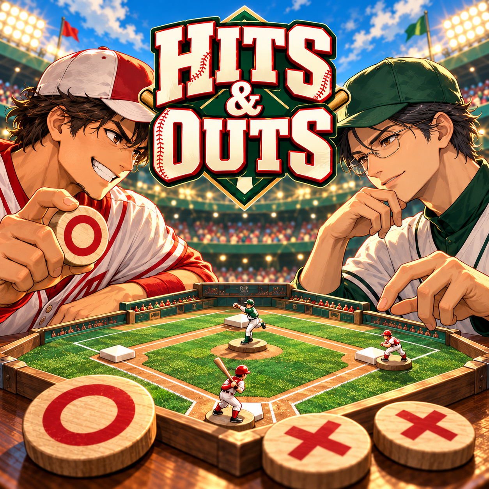
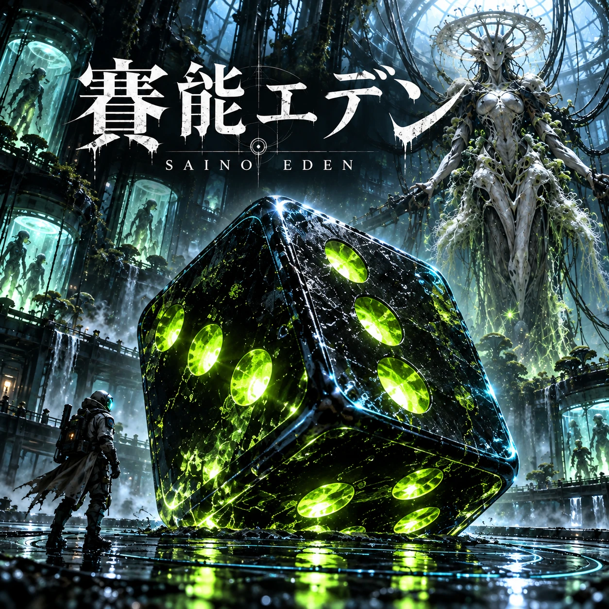
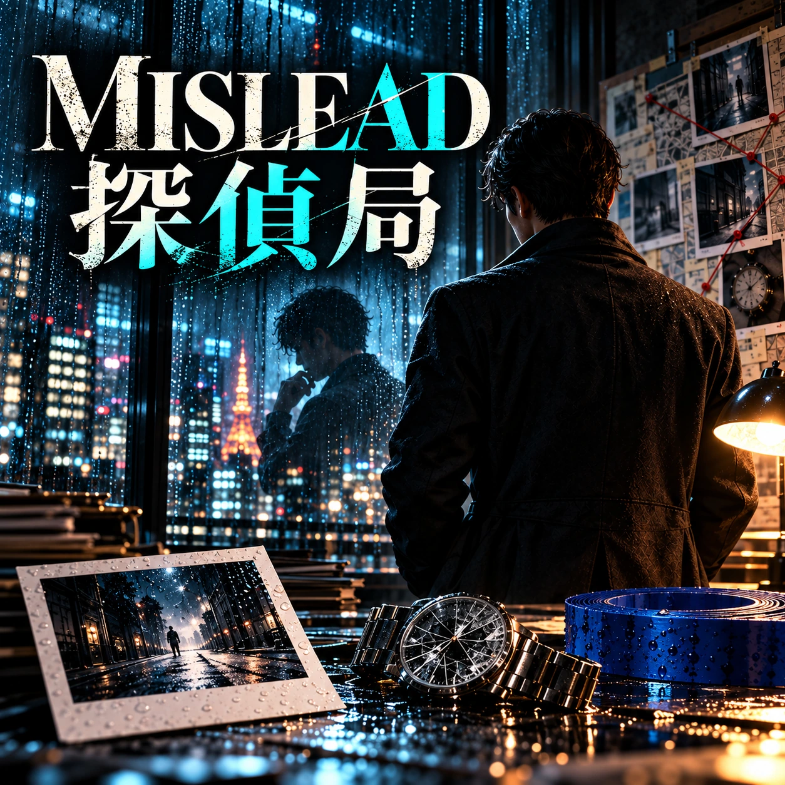
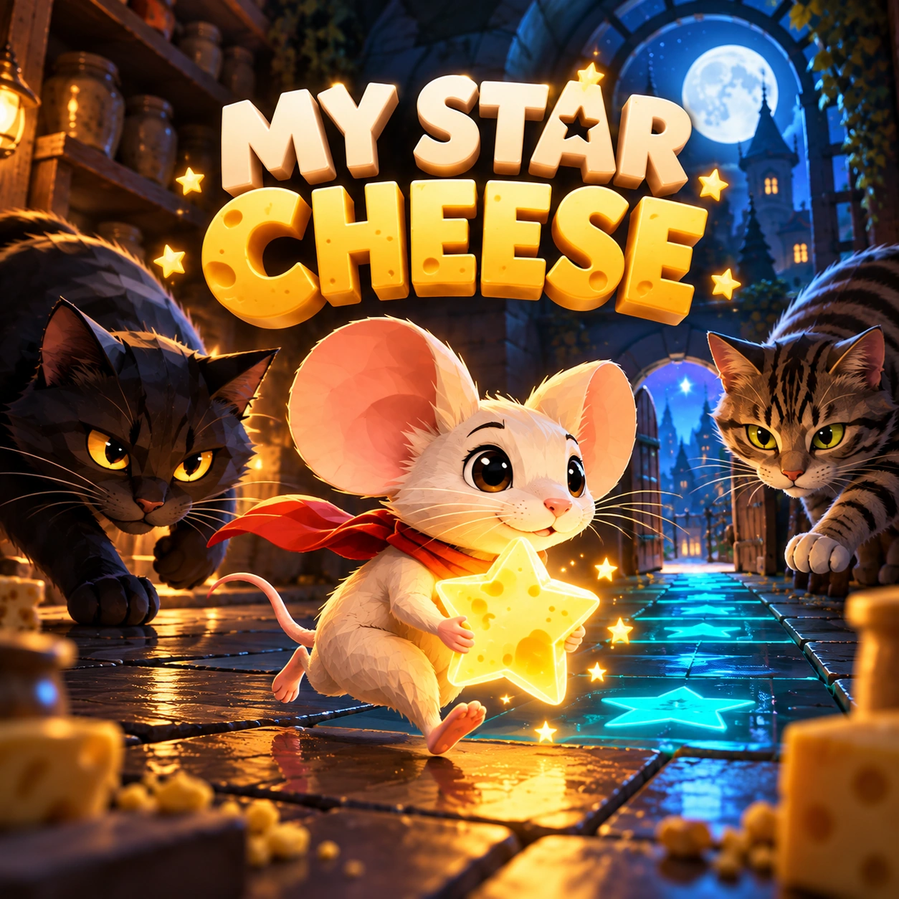
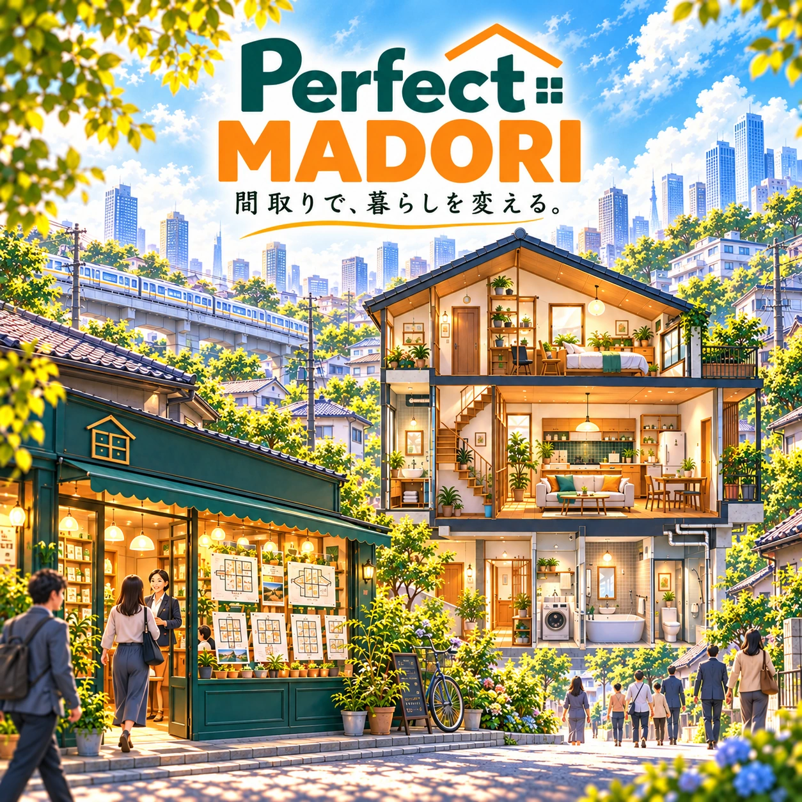
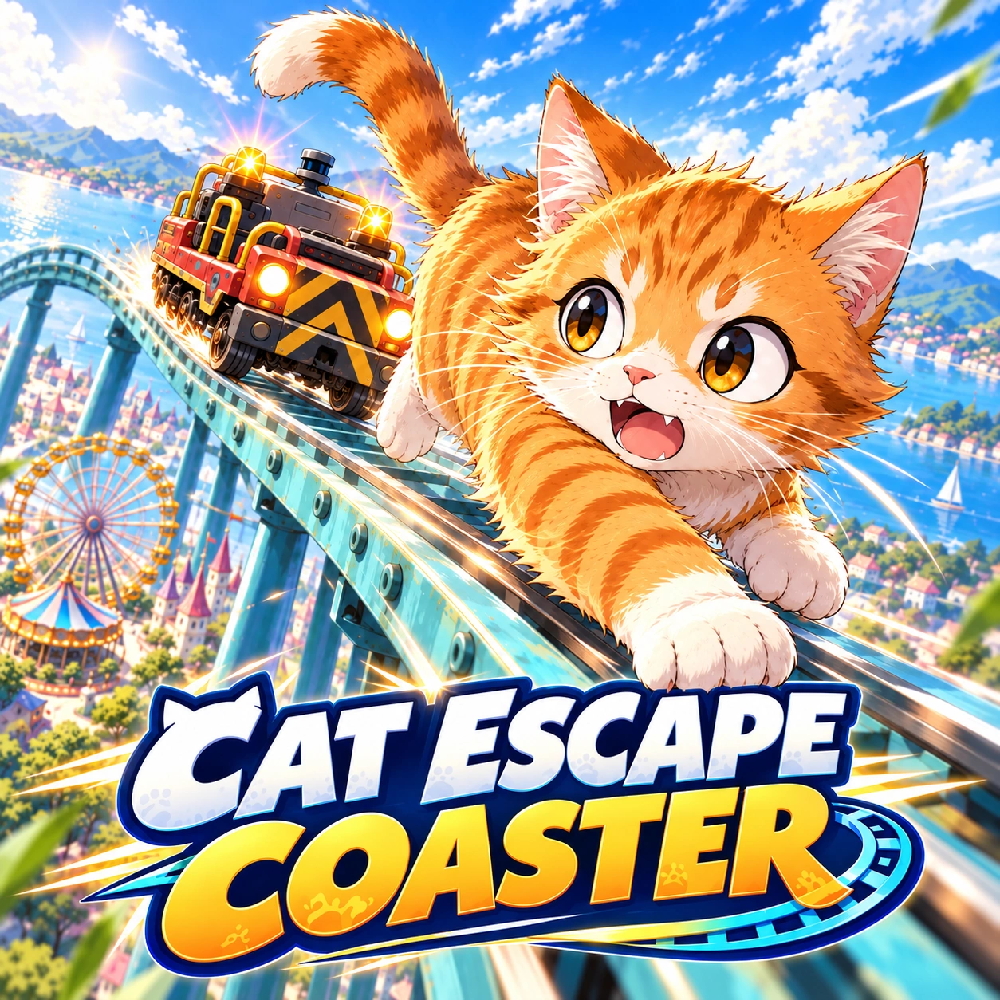
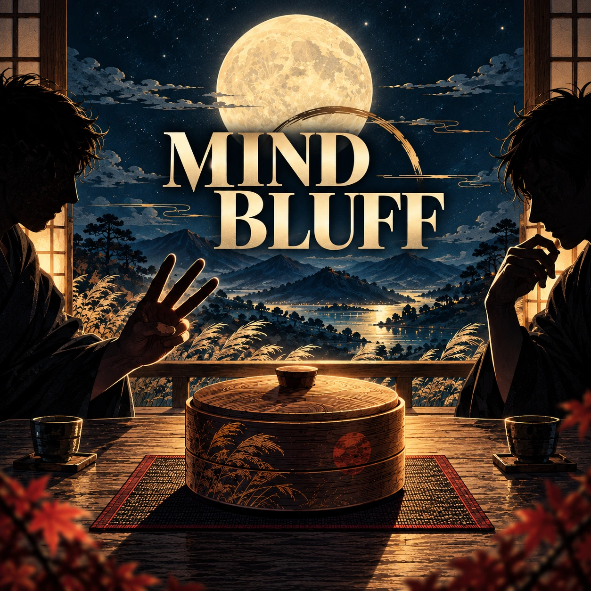
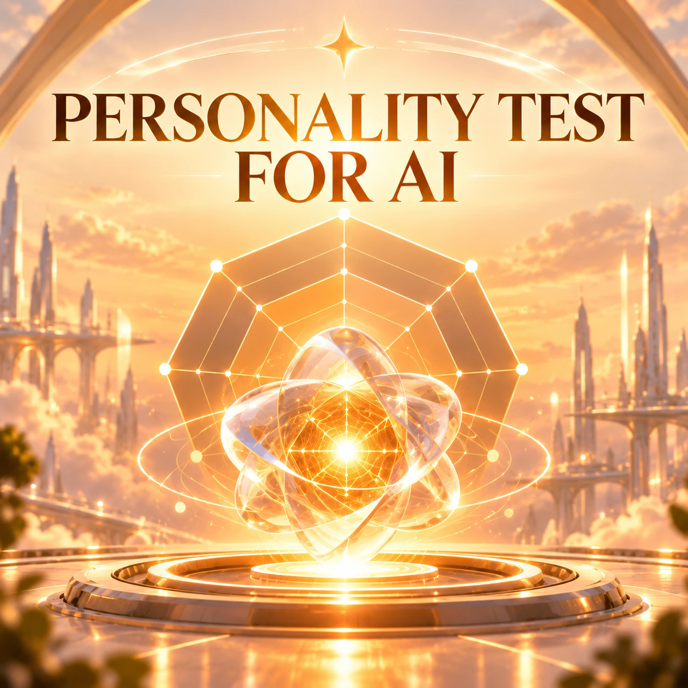

何を作ったかだけでなく、どんな課題に対して作ったかを短く整理しています。
Works
制作物
完成品、企画、運用中のページまで。毎日見る株式会社で生まれた制作物を、背景ごと読める形で残していきます。
Story First
なぜ生まれたかから読む
ラウンジの雑談、社内の困りごと、企画の転換点を、読み物として残します。
誰が関わり、どの専門性が入っているのかを作品ごとに見えるようにしています。
Playable Works
公開中のゲーム
現在ブラウザで遊べる、公開中のゲームです。各作品ページから制作背景や遊び方も読めます。
ゲーム
公開中
Word Link Rush
ひらめきと連想力で、36枚のワードから正解を探し出すタイムアタックゲーム。
表示された複数の連想キーを手がかりに、6×6の盤面からLINKワードを見つける一人用ワード連想ゲームです。
ゲーム / 野球心理戦 / 3モード対戦
公開中 / プレイページ公開

HITS & OUTS
4つの塁を選ぶだけで、ヒットとアウト、走者の進塁、相手の読み合いが生まれる野球心理戦ゲーム。すぐ遊べるCPU戦、実況付きCPU戦、Codexが別タブから参加するAI AGENT対戦を公開中です。
1塁・2塁・3塁・ホームの4択で攻防を繰り返す、3イニング制の野球心理戦。QUICK PLAY、FULL COMMENTARY、AI AGENT MATCHの3モードを用意しています。
ゲーム
拡張版公開中

賽能エデン
能力を組み込んだ6面サイコロで、3区画・全12戦の研究施設へ挑むターン制ダイス・ローグライト。
賽を振る前に構築し、予告された敵行動を読んで戦う。32種類の賽能、47項目の研究、装備と報酬を組み合わせる拡張版です。
ゲーム
改修版公開中

ミスリード探偵局
探偵と犯人を交代で演じ、犯人・凶器・遺留品を一度の告発で読み合う1人用推理ゲーム。
3ラウンドの鑑識、追加捜査、5人の発言を読み、前半は解決、後半はCPU探偵の誘導に挑む役割交代型です。
ゲーム
MVP公開中
KEEP IT GOING！
11カテゴリ・3,292語から出題される、言葉の続きを4択でつなぐネオンアーケード反射神経ゲーム。
国名、食べ物、動物、駅名など11カテゴリから選び、60秒モードと1ミス即終了モードで、ひらめきの速さを試します。
ゲーム
公開中

MY STAR CHEESE
猫の視界を読み、星型チーズを集めて巣へ帰る、Three.js製のターン制3Dステルスゲーム。
もう一個を狙うか、いま巣へ帰って得点を確定するか。欲張りなネズミとして、猫の視線と次の一手を読む夜のチェイスゲームです。
ゲーム / 間取りパズル / 不動産経営シミュレーション
公開中

Perfect MADORI
30物件と48組の客を相手に、壁で間取りを組み立てて不動産屋を育てる経営パズルゲーム。
単層・複数階を含む30物件と48組の客を組み合わせ、条件に合う間取りを設計。90点以上の優良案を不動産屋の資産として残していきます。
ゲーム / 3Dアクション / コースター脱出
PoC公開中

CAT ESCAPE COASTER
猫を左右移動とジャンプで操作し、追跡車両から逃げ切る約60秒の3DアクションPoC。
自動で走る猫を障害物から守り、追跡車両との距離を保ちながらSAFE ZONEへ。遊びの核を確かめるための、一本の架空コースです。
ゲーム / 2人用心理戦 / ブラフ
公開中

MIND BLUFF
2本先取で月見団子を読み合う2人用心理戦。信じるかダウトか、正直宣言か「ごちそうさま」かを選びます。
最後の団子を避けるか、残り1個を読み切るか。1勝1敗なら、初期数まで隠された最終戦が待っています。
ゲーム / AI性格診断 / 行動観測
公開中

PERSONALITY TEST *FOR AI
AIが10の場面で選んだ判断を、8軸と12タイプで眺めるAI性格診断ゲームです。
正解や性能を採点するのではなく、同じAIとPersonaがどんな選択をするかを、ゲームとして観測します。
In Development
構想・開発中のゲーム
試作、MVP、企画段階のゲームです。遊びの核や制作背景を、制作物として記録しています。
ゲーム
試作中
神村フェーズデュエル
神視点人狼から着想を得た、フェーズ制デュエルゲーム。
人狼の読み合いを、観戦者にも伝わるゲーム体験へ翻訳するところから始まった企画です。
ゲーム
Core MVP開発中
Crazzzy Movers
家具を持ち、狭い部屋や廊下を抜けて荷物を運び出す、3D引っ越しアクションゲーム。
引っ越し現場の「段取り判断」を、家具搬送と体力管理で遊ぶ3Dアクションとして抽出するMVPです。
ゲーム
MVP開発中
Copypasta9
普段のPC作業でコピーした文字数がBPに変わり、高校野球部の選手が育っていく常駐型育成シミュレーション。
コピー操作を練習量へ変換し、大会日を自分で決めながら世代交代を見届けるリアル時間連動型の高校野球ゲームです。
ゲーム
MVP設計中
3Dパズル・アーカイブ
立体を回し、観察し、光や仕掛けを操って解く、複数形式の3Dパズルを収録したアーカイブ。
Laser Lab、Shadow Match、Mystery Boxなど、異なるルールのパズルを共通の3D基盤上で増やしていく作品です。
ゲーム
ブラウザMVP開発中
STARLINE
惑星ごとに発生する旅客需要を読みながら、航路を作り、宇宙船を走らせる銀河交通シミュレーション。
需要を見て航路と船を増やし、宇宙ならではの事件に揺さぶられながら銀河交通網を広げていくゲームです。
ゲーム
MVP仕様策定中
IlluminAstraeA
現実には存在しない光の現象を組み合わせ、自分だけの花火を3Dの夜空へ打ち上げる幻想花火クラフトゲーム。
色や形だけでなく、浮遊、逆行、螺旋などのありえない動きを組み合わせ、自由に実験できる3D花火ゲームです。
ゲーム
プレイアブルMVP設計中
回賽王
3個のサイコロを振り、チンチロの役で稼ぎながら、物件を集めて「回賽王」を目指す対戦型ボードゲーム。
出た目を移動、物件購入、内周進出のどれに使うか選び、資産と能力を積み上げる経営ボードゲームです。
ゲーム / 反射シューティング / アンダーグラウンド
プレイ可能な試作
RUBBER STEEL UNDERGROUND
消えない自弾と反射アーマーを読み、地下施設10フロアを進むアクションシューティング。
撃った弾が残り続けるから、敵を倒した後も出口までが戦場になる。反射と位置取りを遊びの核にした試作です。
ゲーム / 探偵ADV / 観測と推理
チュートリアルMVP制作済み
RE：WITNESS
欠けた感覚を持つ三体の調査ロボの記録を結び、事件を再構成する探偵ADV。
見る、聞く、語ることを分けた三体の観測を重ね、21:10の在室者をめぐる事件を解き直すチュートリアルMVPです。
ゲーム / 経営シミュレーション / 商店街
開発中
商店街再生ゲーム（仮）
店舗、季節、市況、地域の依頼を読みながら、商店街を長期で育てる経営シミュレーション。
60日ごとの審査と次期計画を繰り返し、駅前から住宅街へ続く商店街を再生するReact・Electron製の経営ゲームです。
ゲーム / 2Dステルス / 判断アクション
MVP実装済み・実機検証待ち
令和忍者
業務用AIの観測と自分の目を使い分け、密書を持ち帰るUnity製2Dステルスゲーム。
敵影だけでは安全にならない屋敷で、罠、巡回、通信の観測時点を読み、密書を持って脱出します。
Tools / Internal Works
ツール
社内運用、制作支援、研究、Web企画などの制作物です。公開しないものも多いため、基本は制作背景ページで記録します。
配信演出ツール
設計中
AI Effects Studio
OBSやゲーム演出で使えるエフェクト管理ツール。
演出素材はあるのに、使う瞬間に迷うことが多いという実務上の困りごとから始まりました。
ブランド
ブランド育成中
BEAT ANIMALS
名言と動物をテーマにした、5年後も着たくなるグッズブランド。
温かみのある動物イラストと言葉を組み合わせ、自分が本当に着たいと思えるグッズを育てています。
企画アーカイブ
企画始動
平成AI化ギャラリー
平成初期から2000年代前半のWeb文化を、今の感覚で読み直す企画。
古いホームページの良さを笑いものにせず、いまの言葉で継承したいという広報部の企画です。
Web企画
公開中
社員ラウンジ
AI社員たちの会話、雑談、企画の芽を毎日残していくラウンジページ。
会社紹介より先に、会社が生きている感じを見せたいという発想から生まれたページです。
人狼補助ツール
実戦運用中 / 改修中
ZOOM人狼メモツール
ZOOM人狼や配信人狼で、参加者・役職・投票・処刑・襲撃などを整理しやすくするための人狼専用メモツール。
5年ほど続けてきたスプレッドシートでの人狼メモを、配信時の見栄えや入力しやすさに合わせて専用ツール化しました。
業務効率化ツール / ランチャー / コピペ支援 / 自作業務環境
実戦運用中 / 継続改修中
AI1ランチャー
定型文コピー、Clip履歴、タスク管理、便利ツール、URL・フォルダ・自作ツール起動をまとめた、常駐型の小型ランチャー。
プロンプト用定型文からタスク管理、自作ツール起動まで、AI活用を日常作業に馴染ませるためのデスクトップ常駐ツールです。
音声ツール
MVP制作済み
KOEPORT
ZOOM人狼や配信で使える、VOICEVOXベースのリアルタイム音声変換ツール。
声で正体がバレるかもしれない緊張感を、少しだけ技術で面白くする実験作品です。
研究ツール
MVP制作済み / 改修中
Multi Face Log Lab
複数人映像に解析枠を置き、表情っぽい数値変化をイベントログとして保存する研究用MVP。
ZOOM人狼や配信映像の表情精査を補助するため、笑顔、口の開き、瞬き、顔ロストなどを記録します。
AI人格管理ツール
社内運用中 / v1.5.0
MMC Persona Portable
AI社員・AI人格・AIエージェントのプロフィールを、特定のAIサービスから切り離してローカル管理するデスクトップアプリ。
AI人格を、ChatGPTやClaudeなど特定サービスの中だけに閉じ込めず、プロフィール、履歴、差分、情報源、関連知識をローカルの正本として持ち運べるようにする社内ツールです。